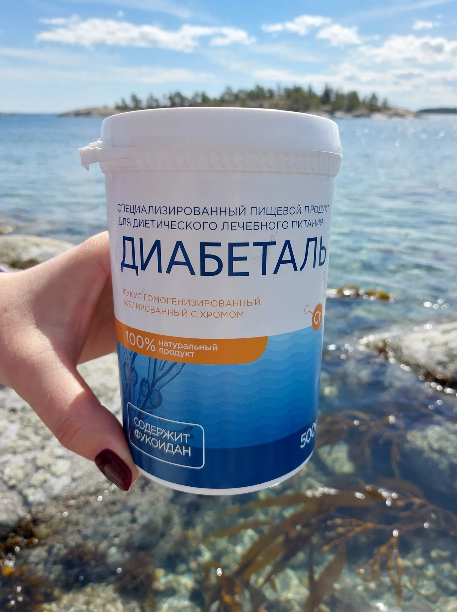
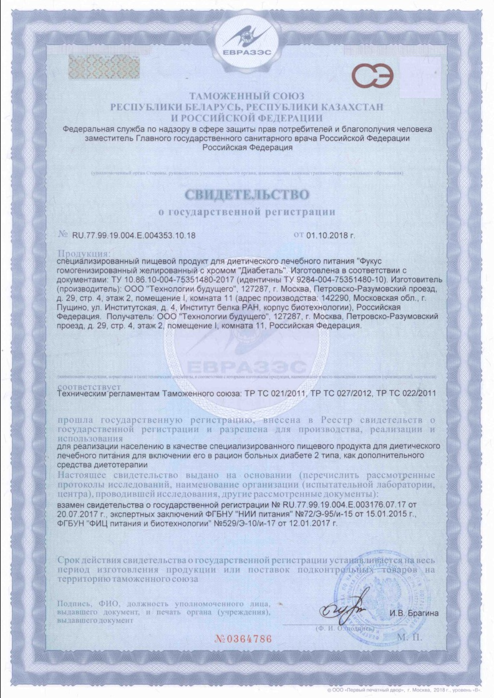

Диабеталь: диетическое питание при диабете
Специализированный пищевой продукт для диетического питания. Рассказываем, как он встраивается в рацион, на что обратить внимание и где проверить документы.
Нажимая кнопку, вы соглашаетесь на обработку персональных данных согласно политике конфиденциальности.

О продукте
Диабеталь относится к специализированной пищевой продукции для диетического питания. Такие продукты не заменяют основной рацион и назначенное специалистом сопровождение, а дополняют его там, где питание нужно выстраивать осознанно.
Для кого
Для взрослых, которые следят за углеводным обменом и хотят сделать рацион предсказуемее. Подходит ли продукт именно вам, подскажет специалист.
Способ применения
По 40–50 г два раза в день за 20 минут до еды, запивая водой. Гель можно растворить в соке, учитывая его углеводы в рационе. Перед применением проконсультируйтесь со специалистом.
Что важно знать
Есть индивидуальная непереносимость компонентов и противопоказания. Полный перечень смотрите на упаковке и в консультации.
Состав и роль компонентов
Состав: фукус, вода высокой степени очистки, органический хром, сироп топинамбура, альгинат натрия.
Фукус
Бурая водоросль, природный источник йода, полифенолов, минеральных веществ и растительных волокон. Йод участвует в нормальной работе щитовидной железы и в обмене веществ.
Органический хром
Хром участвует в обмене макронутриентов и в поддержании нормального уровня глюкозы в крови в рамках сбалансированного питания.
Сироп топинамбура
Содержит инулин — пребиотическое пищевое волокно, которое служит питанием для полезной кишечной микрофлоры.
Альгинат натрия
Водорастворимое пищевое волокно из водорослей. Формирует гелевую структуру продукта и способствует регулярной работе кишечника.
Из чего складывается диетический рацион
Продукт — лишь одна деталь. Основу задают привычки, и несколько принципов используют почти все, кто выстраивает питание при нарушениях углеводного обмена.
- Гликемический индекс. Показывает, как быстро продукт повышает уровень глюкозы. Предпочтительны продукты с низким и средним значением.
- Хлебные единицы. Условная мера углеводов: помогает планировать порции и распределять их по приёмам пищи.
- Клетчатка. Овощи, бобовые, цельнозерновые продукты замедляют усвоение углеводов и дольше сохраняют сытость.
- Режим. Регулярные приёмы пищи без длинных перерывов проще для контроля самочувствия.
Что стоит вести в дневнике
Записи делают разговор со специалистом конкретным: вместо «вроде бы всё нормально» у вас есть данные.
- Время и состав приёмов пищи, размер порций.
- Измерения уровня глюкозы по схеме, назначенной специалистом.
- Физическую активность и самочувствие.
- Новые продукты, включая Диабеталь, и вашу реакцию на них.
Документы
Продукт прошёл государственную регистрацию. Нажмите на изображение, чтобы рассмотреть документ крупнее.

Частые вопросы
Что такое Диабеталь?
Специализированный пищевой продукт для диетического питания. Он входит в рацион как часть общего плана питания, согласованного со специалистом.
Можно ли начинать самостоятельно?
При диагностированных заболеваниях сначала обсудите изменения питания с лечащим специалистом.
Где найти подробности о продукте?
Оставьте заявку на консультацию: специалист ответит на вопросы и сообщит актуальные условия. Консультация бесплатная.
Как узнать актуальную цену?
Нажмите «Узнать цену» — условия на сегодняшний день уточнит специалист.
Контакты производителя
ООО «Технологии Будущего»
ИНН 7715525834
ОГРН 1047796450503
Юридический адрес
128287, г. Москва, Петровско-Разумовский проезд, д. 29, стр. 2, этаж 2
Телефон
8 800 100-15-67
Звонок бесплатный